設定ルート：48 タスクの完全な索引
SPRO パス · 業務処理/カスタマイジング · 手順 · 実際の画面 —— すべて教材と一致
このページは「操作マニュアル式」の索引で、SPRO の実際の順序に従って A〜J の 10 グループに分けています。各タスクでは、教材原文のメニュー/IMG パス、T-code、手順の要点、そして実際のシステム画面を示します（元のファイル名は図に記載し、Word 原稿と照合できます）。パスのテキストはクリックしてコピーできます。
| グループ | テーマ | タスク番号 | タスク数 |
|---|---|---|---|
| A | 企業構造：組織と割当 | 01、02、03、04、05、06、07、11、13 | 9 |
| B | 販売事務所と販売グループ | 08、09、10、12 | 4 |
| C | 出荷とロジスティクス実行 | 14、15、16、17、18、19、20 | 7 |
| D | 得意先マスタと勘定グループ | 21 | 1 |
| E | 価格設定と税 | 22、23、24、25、26、27、28 | 7 |
| F | 勘定設定と更新グループ | 29、30、31、32 | 4 |
| G | パートナ決定 | 33 | 1 |
| H | マスタ登録（業務処理） | 34、35、36、37、38、39 | 6 |
| I | 販売プロセス（業務処理） | 40、41、42、43、44、45 | 6 |
| J | 分析とレポート | 46、47、48 | 3 |
A. 企業構造：組織と割当
まず座標を築きます：販売組織、流通チャネル、製品部門、およびそれらの割当と販売エリア。
販売組織の定義
カスタマイジング（設定）販売データの最上位組織キー。得意先と品目の販売ビューはいずれもこれに紐づきます。
企业结构 → 定义 → 销售和分销 → 定义、复制、删除、检查销售组织手順の要点（教材原文のステップごとの説明）
- 「販売組織の定義」をダブルクリック
原文（中国語）
双击“定义销售组织” - 「保存」をクリック
原文（中国語）
点击保存


流通チャネルの定義
カスタマイジング（設定）製品を「どう売るか」の経路：直販、卸売、小売。販売組織に多対多で割り当てます。
企业结构 → 定义 → 销售和分销 → 定义、复制、删除、检查分销渠道手順の要点（教材原文のステップごとの説明）
- 企業構造－定義－販売管理－流通チャネルの登録、コピー、削除、チェック
原文（中国語）
企业结构－定义－销售和分销－定义、复制、删除、检查分销渠道 - 「流通チャネルの定義」をクリック
原文（中国語）
点击定义分销渠道 - 「新規エントリ」をクリック
原文（中国語）
点击“新条目”


製品部門の定義
カスタマイジング（設定）製品を「ラインでグループ化」：完成品 / スペアパーツ / サービス。販売組織に多対多で割り当てます。
企业结构 → 定义 → 后勤常规 → 定义、复制、删除、检查产品组手順の要点（教材原文のステップごとの説明）
- 企業構造－定義－ロジスティクス一般－製品部門の登録、コピー、削除、チェック
原文（中国語）
企业结构－定义－后勤常规－定义、复制、删除、检查产品组 - 「製品部門の定義」をクリック
原文（中国語）
点击“定义产品组” - 「新規エントリ」をクリック 「新規エントリ」をクリック Z2 增压泵
原文（中国語）
点击“新条目”点击“新条目”
Z2 增压泵

{kind=link}
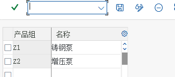
販売組織の会社コードへの割当
カスタマイジング（設定）販売組織がどの会社コードに属するか（多対一）——収益がどの帳簿に計上されるかを決定します。
企业结构 → 分配 → 销售和分销 → 给公司代码分配销售组织手順の要点（教材原文のステップごとの説明）
- 解説 SAP では、1 つの販売組織は 1 つの会社コードにしか割り当てられませんが、1 つの会社コードに複数の販売組織を持たせることはできます。ただし、販売組織を会社コードに割り当てることは、その販売組織の売上収益が財務上その会社コードに属することを意味するだけです。グループ企業の場合は、販売組織が他の会社コードの製品も販売でき、これが会社間販売を構成します。
原文（中国語）
解释：在 SAP 中一个销售组织只可以分配给一个公司代码，但是一个公司代码可以有多个销售组织。但是销售组织分配给一个公司代码，只是意味着这个销售组织的销售收入和在财务上是属于这个公司代码的。如果是集团公司，销售组织仍然可以销售其他公司代码的产品，这样就构成了跨公司销售。 - 会社コード CoCd に C999 を直接入力
原文（中国語）
直接录入公司代码CoCd为C999


流通チャネルの販売組織への割当
カスタマイジング（設定）流通チャネルを販売組織に割り当てて初めて、販売エリアを構成できます。
企业结构 → 分配 → 销售和分销 → 给销售组织分配分销渠道手順の要点（教材原文のステップごとの説明）
- 解説 「直販」と「卸売」の 2 つの流通チャネルを「颐宁販売組織」に割り当てます。この割当は「颐宁販売組織」が「直販」と「卸売」の 2 つのチャネルでの販売を行えることを意味し、他の販売組織もこの 2 つのチャネルでの販売を行える可能性があるため、この割当は多対多の関係になります。
原文（中国語）
解释：我们将“直销”和“批发”两个分销渠道分配给“颐宁销售组织”，这个分配意味着 “颐宁销售组织”可以从事“直销”和“批发”两种渠道的销售，其他的销售组织也可能从事这两种渠道的销售，所以分配是多对多的关系

{kind=link}
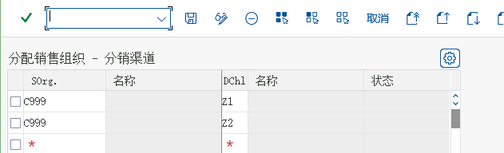
製品部門の販売組織への割当
カスタマイジング（設定）製品部門を販売組織に割り当てます（教材のメニューでは「販売組織への部門割当」）。
企业结构 → 分配 → 销售和分销 → 给销售组织分配部门手順の要点（教材原文のステップごとの説明）
- 解説 このステップでは「铸钢泵」と「增压泵」を「颐宁販売組織」に割り当てます。つまり「颐宁販売組織」は「铸钢泵」と「增压泵」の販売を行えます。他の販売組織もこの 2 つの製品部門の販売を行う可能性があるため、この割当も多対多です
原文（中国語）
解释：本步中将“铸钢泵”和“增压泵”分配给“颐宁销售组织”。这意味着“颐宁销售组织”可以从事“铸钢泵”和“增压泵”的销售。其他销售组织也可能从事这两个产品组的销售，所以这个分配也是多对多

{kind=link}
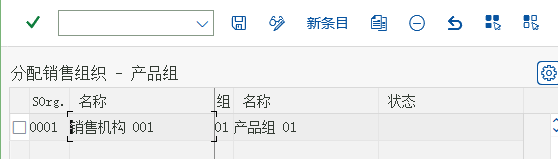
販売エリアの設定
カスタマイジング（設定）「販売組織 × 流通チャネル × 製品部門」の組合せを1つずつ作成する。全部で 4 つ。
企业结构 → 分配 → 销售和分销 → 设置销售范围手順の要点（教材原文のステップごとの説明）
- 解説 SAP では、販売組織、流通チャネル、製品部門の組み合わせを「販売エリア」と呼びます。その業務上の意味は、ある販売組織が特定の流通チャネルを通じて特定の製品部門を扱うことです。颐宁販売組織では、直販と卸売を通じて 2 つの製品部門の販売を割り当てることができ、販売エリアは全部で 4 つあるため、それぞれに設定します。販売エリアは販売部門とも呼ばれます。
原文（中国語）
解释：SAP 把销售组织、分销渠道和产品组的组合称为“销售范围”，它的业务含义是某个销售组织通过某种分销渠道经营某个产品组。在颐宁销售组织中，我们可以分配通过直销 和批发经营两种产品组的销售，一共有四个销售范围，我们分别设置，销售范围也叫销售部门
{kind=link}
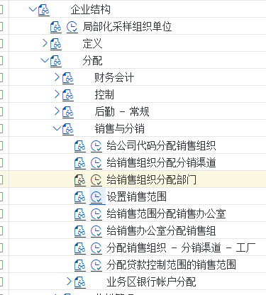

単純な順列組み合わせで、全部で 8 通りの組み合わせです
カスタマイジング（設定）教材の考察問題：2 チャネル × 2 製品部門の割当組合せは全部で 8 通り。まず整理してから設定します。
プラントの販売組織／流通チャネルへの割当
カスタマイジング（設定）プラント → 販売組織/流通チャネル（多対多）：この販売組織がどのプラントから出荷できるかを決定します。
企业结构 → 分配 → 销售和分销 → 分配销售组织-分销渠道-工厂手順の要点（教材原文のステップごとの説明）
- 企業構造－割当－販売管理－販売組織-流通チャネル-プラントの割当
原文（中国語）
企业结构－分配－销售和分销－分配销售组织-分销渠道-工厂


B. 販売事務所と販売グループ
統計と権限に使用する組織単位（価格設定のロジックには影響しません）。
販売事務所の定義
カスタマイジング（設定）販売事務所＝地区／責任で区分された販売機構で、統計と権限に使用します。
企业结构 → 定义 → 销售和分销 → 维护销售办公室手順の要点（教材原文のステップごとの説明）
- 企業構造－定義－販売管理－販売事務所の登録
原文（中国語）
企业结构－定义－销售和分销－维护销售办公室 - Z001 颐宁北方销售公司（颐宁北方の販売会社）
原文（中国語）
Z001 颐宁北方销售公司


販売グループの定義
カスタマイジング（設定）販売グループ＝販売事務所の中の担当者グループです。
企业结构 → 定义 → 销售和分销 → 维护销售组手順の要点（教材原文のステップごとの説明）
- SD では「販売グループ」を定義して統計・分析に利用することもできます。颐宁社では东北、西北、东南、西南の 4 つの販売グループを定義します。それぞれが北方と南方の販売事務所に属します。販売グループと販売事務所は SD では任意の組織構造で、必須ではありません 企業構造－定義－販売管理－販売グループの登録
原文（中国語）
在 SD 中我们还可以定义“销售组”来统计和分析。在颐宁公司，我们定义东北、西北、东南、西南四个销售组。他们分别隶属于北方和南方销售办公室。销售组和销售办公室在 SD都是可选的组织结构，不是必选的
企业结构－定义－销售和分销－维护销售组


販売エリアへの販売事務所割当
カスタマイジング（設定）販売事務所を販売エリアに割り当てます。
企业结构 → 分配 → 销售和分销 → 给销售范围分配销售办公室手順の要点（教材原文のステップごとの説明）
- 颐宁公司の北方と南方の 2 つの販売事務所はどちらも铸钢泵と增压泵の卸売と直販を行えるため、この 2 つの販売事務所をこの 4 つの販売エリアに割り当てます。
原文（中国語）
颐宁公司的北方和南方两个销售办公室都可以从事铸钢泵和增压泵的批发和直销，所以我们将这两个销售办公室分配给这四个销售范围


販売グループの販売事務所への割当
カスタマイジング（設定）販売グループを販売事務所に割り当てます。
企业结构 → 分配 → 销售和分销 → 给销售办公室分配销售组
C. 出荷とロジスティクス実行
どこから出荷するか、どこに積み込むか、どの保管場所からピッキングするか。
出荷ポイントの定義
カスタマイジング（設定）出荷ポイント＝出荷の開始地点です。教材では Z999 颐宁装运点を使用し、プラントとは多対多です。
企业结构 → 定义 → 后勤执行 → 定义、复制、删除、检查起运点手順の要点（教材原文のステップごとの説明）
- 企業構造－定義－ロジスティクス実行－出荷ポイントの登録、コピー、削除、チェック
原文（中国語）
企业结构－定义－后勤执行－定义、复制、删除、检查起运点 - Z999 颐宁装运点（颐宁の出荷ポイント）
原文（中国語）
Z999 颐宁装运点
{kind=link}
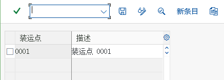
{kind=link}
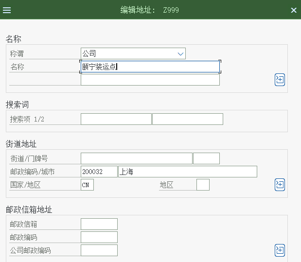
積込ポイントの定義
カスタマイジング（設定）積込ポイント＝積み込みの具体的な位置で、出荷ポイントに紐づきます。
企业结构 → 定义 → 后勤执行 → 维护装载点手順の要点（教材原文のステップごとの説明）
- 解説 出荷ポイントの下はさらに積込ポイントに細分化でき、確定した積込場所を指定できます。たとえばトラックの出荷ポイントでは、倉庫のゲートごとに 3 つの積込ポイントに分ける、といった具合です。本ステップでは積込ポイントを定義します。出荷伝票には積込ポイントを指定できます。積込ポイントは SD では任意の組織構造です。積込ポイントを定義しなくても SD は使用できます。 企業構造－定義－ロジスティクス実行－積込ポイントの登録
原文（中国語）
解释：起运点之下可以再细分装载点，来指明确定的装载地点，如一个卡车起运点中可能按仓库的大门分成三个装载点等等。本步骤我们将定义装载点。发货单中可以注明装载点。单装载点是 SD 中可选的组织结构。没有装载点的定义. SD 也能使用。
企业结构－定义－后勤执行－维护装载点 - 作業範囲を入力
原文（中国語）
输入工作范围 - 「新規エントリ」をクリックして、新しい積込ポイントを入力
原文（中国語）
点击新条目，输入新的装载点


出荷ポイントのプラントへの割当
カスタマイジング（設定）出荷ポイントをプラントに割り当てます（1つのプラントに陸路・水路など複数の出荷ポイントを設定できます）。
企业结构 → 分配 → 后勤执行 → 给工厂分配起运点手順の要点（教材原文のステップごとの説明）
- 解説 1 つのプラントには複数の出荷ポイント（陸路、水路など）を持たせられます。1 つの出荷ポイントを複数のプラントで共用することもできるため、両者は多対多の関係です。
原文（中国語）
解释：一个工厂可以有几个起运点，如公路、水路等。一个起运点也可以是几个工厂公用的，所以两者是多对多的关系。 - 「割当」をクリック
原文（中国語）
点击分配

{kind=link}
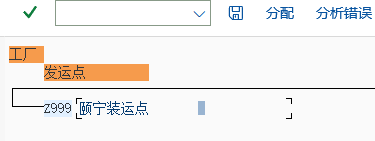
輸送条件の定義
カスタマイジング（設定）輸送条件（Shippping Conditions）：品目/プラントと一緒に出荷ポイントを決定します。
后勤执行 → 装运 → 基本发运功能 → 装运点和收货点确认 → 定义运送条件手順の要点（教材原文のステップごとの説明）
- ロジスティクス実行－出荷－基本出荷機能－出荷ポイントと受領ポイントの決定－輸送条件の定義
原文（中国語）
后勤执行－装运－基本发运功能－装运点和收货点确认－定义运送条件


積込グループの定義
カスタマイジング（設定）積込グループ：品目マスタと一緒に積込ポイントを決定します。
后勤执行 → 装运 → 基本发运功能 → 装运点和收货点确认 → 定义装载组手順の要点（教材原文のステップごとの説明）
- ロジスティクス実行－出荷－基本出荷機能－出荷ポイントと受領ポイントの決定－積込グループの定義
原文（中国語）
后勤执行－装运－基本发运功能－装运点和收货点确认－定义装载组 - Z999 フォークリフト-颐宁
原文（中国語）
Z999 叉车-颐宁


出荷ポイントの割当
カスタマイジング（設定）輸送地点別に割当（出荷ポイントのさらなる細分化）。
后勤执行 → 装运 → 装运点和收货点确认 → 分配运送地点手順の要点（教材原文のステップごとの説明）
- 「新規エントリ」をクリック 99 Z999 P999 Z999
原文（中国語）
点击新条目
99 Z999 P999 Z999
{kind=link}
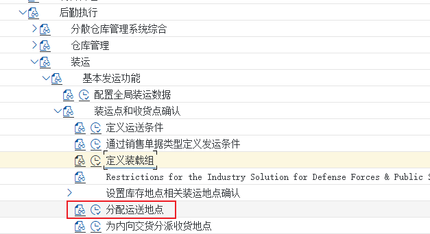
{kind=link}
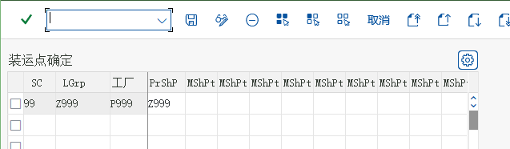
ピッキング保管場所の割当
カスタマイジング（設定）ピッキング保管場所：出荷ポイント + プラント（+ 保管条件）で、どの保管場所からピッキングするかが決まります。
后勤执行 → 装运 → 拣配 → 确定拣配地点 → 分配拣配地点手順の要点（教材原文のステップごとの説明）
- 解説 受注伝票を処理する過程で、SAP システムは出荷ポイントを自動決定できるほか、どの保管場所から品目をピッキングするかも自動決定できます。本設定では、出荷ポイント、プラント、保管条件（品目マスタの項目の 1 つ）によって、ピッキングする保管場所を決定できます。本項では出荷ポイントとプラントの 2 つの条件のみを使用します。
原文（中国語）
解释：在处理销售订单的过程中，SAP 系统除了可以自动建立起运点之外，还可以自动建立货物从哪个库存地点拣配。本配置可以根据起运点、工厂和存储条件（物料主数据的一个 参数）确定销售地点拣配的库存地点。本文中我们只需要选用起运点和工厂两个条件。 - 解説 先頭の 3 つのグレーの項目は、決定要因となる出荷ポイント、プラント、保管条件です。
原文（中国語）
解释：前三个灰色字段是起决定作用的起运点、工厂和存储条件。
{kind=link}
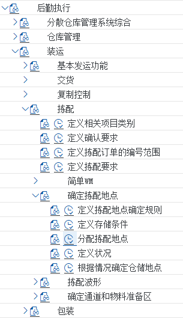

D. 得意先マスタと勘定グループ
得意先勘定グループの画面レイアウト：得意先マスタの販売ビューがどんな形になるかを決定します。
得意先勘定グループの販売データを登録
カスタマイジング（設定）得意先勘定グループの画面レイアウト：得意先マスタの販売ビューでどの項目が必須/任意/非表示かを決定します。
财务会计(新) → 应收账款和应付账款 → 客户账户 → 主数据 → 创建客户主记录准备 → 定义带有屏幕格式的账户组（客户）手順の要点（教材原文のステップごとの説明）
- 解説 このステップでは、各得意先勘定グループに応じて、得意先販売ビューでどのパラメータが必須入力、入力不可、任意入力かを登録します。 財務会計(新)－売掛金／買掛金－得意先勘定－マスタデータ－得意先マスタ登録の準備－画面レイアウト付き勘定グループの定義（得意先）
原文（中国語）
解释：在本步骤中，我们将根据不停的客户账户组维护客户销售视图中哪些参数是必须输入的，哪些是不能输入的，哪些是可选输入的。
财务会计(新)－应收账款和应付账款－客户账户－主数据－创建客户主记录准备－定义带有屏幕格式的账户组（客户） - すでに 2 つの得意先勘定グループを作成しました。ここではこの 2 つの得意先勘定グループを変更します。K001 をダブルクリック
原文（中国語）
我们已经创建了两个客户账户组，在这里我们需要修改这两个客户账户组。双击 K001 - 戻って、「发货」をクリック
原文（中国語）
返回，点击“发货” - 戻って「计费」をクリック
原文（中国語）
返回点击“计费” - 「销售数据」に進み、「销售」をダブルクリック 以下のように設定します
原文（中国語）
进入“销售数据”双击“销售”
设置如下 - 戻って、「计费」をダブルクリック
原文（中国語）
返回，双击“计费”

{kind=link}
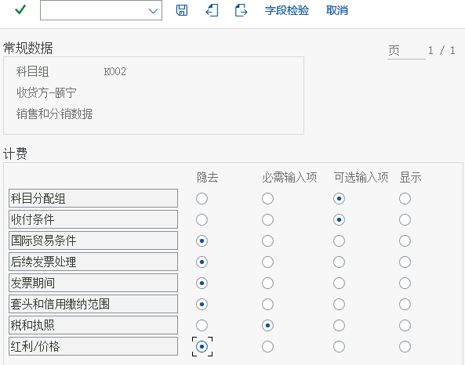
E. 価格設定と税
条件技術（計算スキーマ、スキーマ決定）と税決定ルール。
計算スキーマの定義
カスタマイジング（設定）RVAA01計算スキーマ（教材では RVAA01 標準）：ステップ = 条件タイプ＋計算タイプ＋勘定キー。
销售和分销 → 基本功能 → 定价 → 定价控制 → 定义并分配定价过程手順の要点（教材原文のステップごとの説明）
- 販売管理－基本機能－価格設定－価格設定管理－計算スキーマの定義と割当
原文（中国語）
销售和分销－基本功能－定价－定价控制－定义并分配定价过程 - ポップアップ
原文（中国語）
弹出 - プロセス「RVAA01」を選択し、左側の「控制数据」をクリック
原文（中国語）
选中过程“RVAA01 ”，点击左侧的“控制数据”
{kind=link}
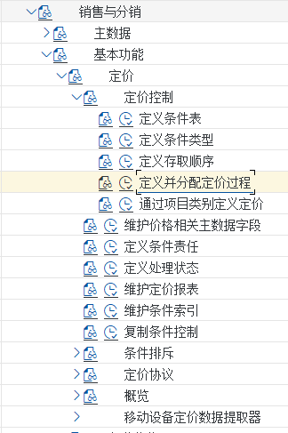

得意先計算スキーマと伝票計算スキーマの定義
カスタマイジング（設定）得意先計算スキーマと伝票計算スキーマ：計算スキーマ決定の2つのキー。
销售和分销 → 基本功能 → 定价 → 定价控制 → 定义并分配定价过程手順の要点（教材原文のステップごとの説明）
- 販売管理－基本機能－価格設定－価格設定管理－計算スキーマの定義と割当
原文（中国語）
销售和分销－基本功能－定价－定价控制－定义并分配定价过程 - 解説 颐宁公司は統一した計算スキーマを採用しているため、システム標準の得意先計算スキーマを使用するだけで済みます。この得意先計算スキーマの項目は、得意先マスタを定義する際に 6.36 で受注先マスタの販売ビューを登録する中で割り当てます。 戻る
原文（中国語）
解释：颐宁公司采用统一的定价过程，所以我们只需要使用系统标准的客户定价过程就可以了。这个客户定价过程参数我们将在定义客户主数据时 6.36 维护订货方主数据的销售视 图中分配。
返回

{kind=link}
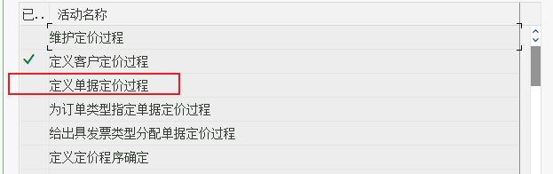
計算スキーマ決定の定義
カスタマイジング（設定）計算スキーマ決定：販売エリア＋得意先計算スキーマ＋伝票計算スキーマ → どのスキーマを使うか。
销售和分销 → 基本功能 → 定价 → 定价控制 → 定义并分配定价过程手順の要点（教材原文のステップごとの説明）
- 販売管理－基本機能－価格設定－価格設定管理－計算スキーマの定義と割当
原文（中国語）
销售和分销－基本功能－定价－定价控制－定义并分配定价过程 - 颐宁社の新しい計算スキーマ決定を定義します。「新規エントリ」をクリック
原文（中国語）
我们来定义颐宁公司新的定价确认点击新条目

{kind=link}
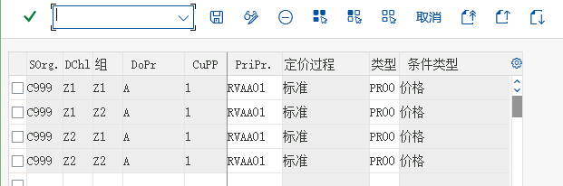
販売伝票のリストと除外を有効化
カスタマイジング（設定）リストと除外（Listing / Exclusion）：どの品目がどの得意先/チャネルで販売できるかを制限します。
后勤执行 → 装运 → 基本发运功能 → 列表/排斥手順の要点（教材原文のステップごとの説明）
- ロジスティクス実行－出荷－基本出荷機能－リスト／除外
原文（中国語）
后勤执行－装运－基本发运功能－列表/排斥 - 「販売伝票タイプ別のリスト／除外の有効化」をダブルクリック
原文（中国語）
双击“根据销售单据类型激活清单/排斥” - 解説 SAP では、販売価格設定と同様の技術（条件技術と呼ばれます）を使って「リスト」と「除外」を定義します。画面の 7 つのステップに従って、柔軟な「リスト」と「除外」のルールを定義できます。本項では A00001 のリストプロセスと B00001 の除外プロセスを採用し、どちらも単純に得意先によって、販売できる品目（「リスト」）と販売できない品目（「除外」）を決めます。 QT と OR が今回使用するもので、定義済みの「リスト」と「除外」をこれらに割り当てます。
原文（中国語）
解释：SAP 使用和销售定价类似的技术（称之为条件技术）来定义“清单”和“排斥”。根据屏幕的 7 个步骤，用户可以定义灵活的“ 清单” 和“ 排斥” 规则。在本部分我们采用 A00001清单过程和 B00001 排斥过程，都是简单地按客户来决定哪些物料是可以销售（“ 清单”），哪些物料是不可以销售（“ 排斥”）
QT 和 OR 是本次要用的，我们将预定义的“清单”和“排斥”分配给他们。


販売伝票の品目決定を登録
カスタマイジング（設定）品目決定（Material Determination）：代替品目で置き換えます（例：得意先が指定したブランド品番）。
后勤执行 → 装运 → 基本发运功能 → 物料确定 → 分配过程到销售凭证类型手順の要点（教材原文のステップごとの説明）
- 解説 状況によっては、受注伝票に入力する商品コードが自社標準の品目マスタコードではないことがあります。たとえば得意先の品目コードや国際物品番号（IAN）などを入力する必要がある場合です。SAP では、これらの特別なコードを品目マスタとして登録する必要はなく、「品目決定」のルールを登録するだけで、システムがこれらの特別なコードを自動的に品目マスタに置き換えます。「品目決定」のルールは販売伝票のタイプによって決まります。 ロジスティクス実行－出荷－基本出荷機能－品目決定－販売伝票タイプへのプロセス割当
原文（中国語）
解释：在有些情况下，销售订单需要输入的商品代码不是本公司标准的物料主数据代码，比如需要输入客户的物料代码，或者需要输入国际物品编码（IAN）等。在 SAP 里不需要将这些特殊的代码维护成物料主数据，而只需要维护一个 “ 物料确定” 的规则，让系统将这些特殊代码自动替换成物料主数据。“ 物料确定”规则是由销售单据的类型决定。
后勤执行－装运－基本发运功能－物料确定－分配过程到销售凭证类型
{kind=link}
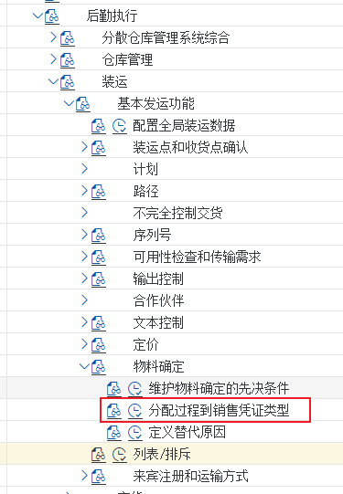

税決定ルールの定義
カスタマイジング（設定）税決定ルール：税コードをどう決定するかを決めます。
销售和分销 → 基本功能 → 税收 → 定义税收确定规则
得意先税分類と品目税分類の定義
カスタマイジング（設定）得意先税分類＋品目税分類 → 税コードを決定（売上税がいくらになるか）。
销售和分销 → 基本功能 → 税收 → 定义主记录数据相关性手順の要点（教材原文のステップごとの説明）
- 解説 受注伝票の価格設定では、売上税（条件タイプ MWST）の具体的な税率は得意先と品目の 2 つの要素で決まります。得意先は得意先マスタの「税分類」項目で、品目は品目マスタの「税分類」項目で決まります。
原文（中国語）
解释：在销售订单定价的过程中，销项税（条件类型 MWST）的具体税率是由客户和物料两个因素决定的。客户是通过客户主数据中的 “ 税分类” 参数决定的，而物料是通过物料主数据中的“税分类”参数决定的。 - 「得意先」の税をクリック
原文（中国語）
点击“客户”税款 - 税分類は得意先マスタに登録され、受注伝票の処理時に得意先と品目の税分類に基づいて適用税率が決定されます
原文（中国語）
税分类会维护在客户主数据中，在销售订单的处理过程会根据客户和物料中的税分类决定适用税率


F. 勘定設定と更新グループ
収益勘定の決まり方（勘定設定）、分析レポートのデータの入り方（更新グループ）。
品目の勘定割当グループの定義
カスタマイジング（設定）品目の勘定割当グループ：教材では M1 自製品 / M2 取引商品を使い、収益勘定を直接決定します。
销售和分销 → 基本功能 → 科目分配/成本 → 收入账户确定 → 检查科目分配的相关主数据手順の要点（教材原文のステップごとの説明）
- 解説 受注伝票の請求時には、システムが請求書の会計伝票を自動的に生成します。そのうち売上収益勘定は、システム上で品目や得意先などの要素によって決定できます。颐宁公司では、売上収益勘定は品目によって「自製品」と「取引商品」の 2 つの勘定に分けるだけで済みます。品目が売上収益勘定を決定する作用は、品目マスタの「勘定割当グループ」によって実現します。 販売管理－基本機能－勘定割当/原価－収益勘定設定－勘定割当関連マスタのチェック
原文（中国語）
解释：在销售订单开票时，系统会自动生成发票的会计凭证，其中销售收入科目在系统中可以由物料、客户等因素决定。颐宁公司对于销售收入科目只需要按物料分成 “ 自制产品” 和 “贸易商品” 两个科目。物料对销售收入科目的决定作用是通过物料主数据中的 “ 账户分配组”实现的。
销售和分销－基本功能－科目分配/成本－收入账户确定－检查科目分配的相关主数据 - 「品目：勘定割当グループ」をダブルクリック
原文（中国語）
双击物料：账户分配组 - M1 自製品-颐宁 戻って、「得意先：勘定割当グループ」をダブルクリック
原文（中国語）
M1 自制产品-颐宁
返回，双击“客户：科目分配组”
{kind=link}
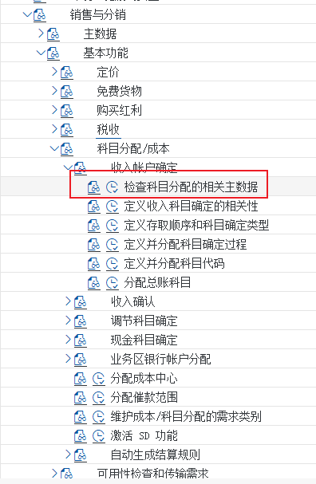

販売収益の総勘定元帳勘定の登録
カスタマイジング（設定）収益勘定を勘定設定に割り当てます（勘定キー + 勘定割当グループ → 勘定）。
销售和分销 → 基本功能 → 科目分配/成本 → 收入账户确定 → 分配总帐科目手順の要点（教材原文のステップごとの説明）
- 販売管理－基本機能－勘定割当/原価－収益勘定設定－総勘定元帳勘定の割当
原文（中国語）
销售和分销－基本功能－科目分配/成本－收入账户确定－分配总帐科目 - 売上収益勘定はさまざまな要素の影響を受けますが、颐宁公司では品目によって決まります。「表格 3 物料组/账户关键字」をダブルクリック
原文（中国語）
销售收入科目可能收到各种因素的影响，但颐宁公司的是由物料决定的。双击“表格 3 物料组/账户关键字” - 新規作成
原文（中国語）
新建
{kind=link}
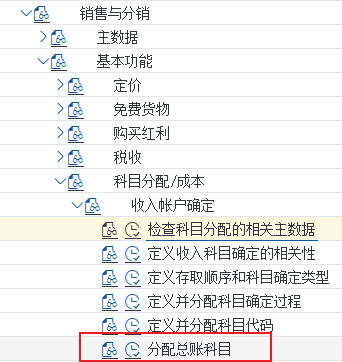

販売伝票のヘッダレベルで更新グループを割当
カスタマイジング（設定）ヘッダ更新グループ：どのヘッダデータをロジスティクス情報システムに入れるか（分析レポートの前提）。
后勤常规 → 后勤信息系统 → 后勤数据仓库 → 更新 → 更新控制 → 设置：销售和分销 → 更新组 → 在抬头等级分配更新组手順の要点（教材原文のステップごとの説明）
- ロジスティクス一般－ロジスティクス情報システム－ロジスティクスデータウェアハウス－更新－更新制御－設定：販売管理－更新グループ－ヘッダレベルでの更新グループ割当
原文（中国語）
后勤常规－后勤信息系统－后勤数据仓库－更新－更新控制－设置：销售和分销－更新组－在抬头等级分配更新组 - 解説 SAP ロジスティクスシステムには分析ツールと分析レポートが多数含まれています。販売管理では、本ステップと次のステップで業務データからロジスティクス情報システムへの情報更新を有効化する必要があり、そうして初めてこれらのレポートにデータが含まれます。本ステップは受注伝票ヘッダの更新ルールで、販売エリア、得意先、受注伝票タイプによって決まります。 解説：上の図は、ロジスティクス情報システムの更新を有効化済みの受注伝票ヘッダの一覧です。「新建」をクリックします。
原文（中国語）
解释：SAP 后勤系统包含了很多分析工具和分析报表，对于销售和分销我们需要在本步骤和下一个步骤中激活业务数据对后勤信息系统的信息更新，这样这些报表才会包含数据。本步骤是销售单据抬头的更新规则，是由销售范围、客户和销售单据类型来决定的。
解释：上图是所有已经激活更新后勤信息系统的销售凭证抬头的清单点击新建 - その他のヘッダレベルの更新グループの割当を設定します。
原文（中国語）
设置其他抬头等级分配更新组。

{kind=link}
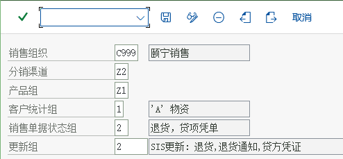
販売伝票の明細レベルで更新グループを割当
カスタマイジング（設定）明細更新グループ：明細レベルのデータ（品目、数量、金額）を更新するかどうか。
后勤常规 → 后勤信息系统 → 后勤数据仓库 → 更新 → 更新控制 → 设置：销售和分销 → 更新组 → 在项目等级分配更新组手順の要点（教材原文のステップごとの説明）
- ロジスティクス一般－ロジスティクス情報システム－ロジスティクスデータウェアハウス－更新－更新制御－設定：販売管理－更新グループ－明細レベルでの更新グループ割当
原文（中国語）
后勤常规－后勤信息系统－后勤数据仓库－更新－更新控制－设置：销售和分销－更新组－在项目等级分配更新组 - 解説 SAP ロジスティクス情報システムには分析ツールと分析レポートが多数含まれています。SD では、本ステップと前のステップで業務データからロジスティクス情報システムへの情報更新を有効化する必要があり、そうして初めてこれらのレポートにデータが含まれます。本ステップは受注伝票の明細レベルの更新ルールで、販売エリア、得意先、品目の受注伝票タイプ、明細カテゴリによって決まります。 解説：一覧には、ロジスティクス情報システムの更新を有効化済みの受注伝票の明細レベルの一覧が表示されます。「新条目」をクリックします。
原文（中国語）
解释：SAP 后勤信息系统包含很多分析工具和分析报表。对于 SD，我们需要在本步骤和上步骤激活业务数据对后勤信息系统的信息更新，这些报表才会包含数据。本步骤是销售单据项目级别的更新规则，是由销售范围、客户、物料销售单据类型、行项目类别决定的。
解释：列表中是已经激活更新后勤信息系统的销售凭证行项目级别的清单，点击新条目

{kind=link}
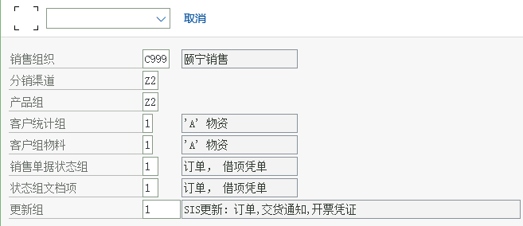
G. パートナ決定
4 つのパートナ役割がどこから来るか。
パートナ決定の設定
カスタマイジング（設定）パートナ決定：1 つの伝票の 4 つの役割がどこから来るか（得意先マスタから導出）。
销售和分销 → 基本功能 → 合作伙伴确定 → 设置合作伙伴确定手順の要点（教材原文のステップごとの説明）
- 販売管理－基本機能－パートナ決定－パートナ決定の設定
原文（中国語）
销售和分销－基本功能－合作伙伴确定－设置合作伙伴确定 - 解説 システムのパートナ決定は多くの要素の影響を受け、非常に柔軟です。今回は得意先マスタに関する設定のみを追加し、その他はシステムの定義済み設定を使用します。
原文（中国語）
解释：系统中合作伙伴的确定受很多因素影响，也非常灵活，本次我们只增加客户主数据的相关配置，其他的使用系统预定义的内容。 - 「得意先マスタのパートナ決定の設定」をダブルクリック 解説：得意先マスタに関連する設定も多数ありますが、基本的には定義済みの内容を採用し、颐宁社が新規作成した得意先勘定グループの機能割当のみを登録します。つまり、各得意先勘定グループがどのパートナ機能の役割を担えるかということです。
原文（中国語）
双击“设置客户主数据的合作伙伴确认”
解释：和客户主数据相关的配置也有很多，我们基本采用预定义的内容，只是维护颐宁公司新建的客户账户组的功能分配，即各客户账户组可以扮演什么合作伙伴功能角色。
{kind=link}
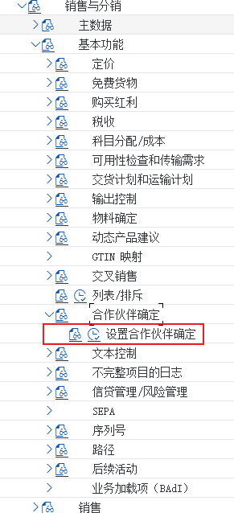

H. マスタ登録（業務処理）
品目の販売ビュー、条件レコード、得意先と出荷先のマスタ。
品目マスタの販売ビューを登録
業務処理MM01品目マスタの販売ビュー：販売できるか、明細カテゴリグループ、税分類、勘定割当グループ、輸送条件。
后勤 → 物料管理 → 物料主记录 → 物料 → 创建（一般） → MM01 立即手順の要点（教材原文のステップごとの説明）
- 解説 颐宁公司の完成品「铸钢泵 170－23」と取引商品「高速增压涡轮泵」は外部に販売するため、この 2 つの品目を使用するには両方の品目マスタの販売ビューを登録する必要があります。 ロジスティクス－品目管理－品目マスタレコード－品目－登録（一般）－MM01 即時
原文（中国語）
解释：颐宁公司的产成品“铸钢泵 170－23”和贸易商品“高速增压涡轮泵”会对外销售，在使用这两个物料时需要维护这两种物料主数据的销售视图
后勤－物料管理－物料主记录－物料－创建（一般）－MM01 立即


品目の販売価格を登録
業務処理VK11VK11 で販売価格（条件タイプ PR00）を登録：価格の実際の格納先。
后勤 → 销售和分销 → 主数据 → 条件 → 按条件类型选择 → VK11 → 创建手順の要点（教材原文のステップごとの説明）
- 解説 これまでに販売価格の計算スキーマを定義しました。本ステップでは、実際に価格表を登録し、颐宁公司の「铸钢泵 170－230」と「高速增压涡轮泵」の販売価格を登録します。SAP では計算スキーマの条件タイプに従って登録するもので、本ステップで登録するのは条件タイプ PR00 の品目価格です。 ロジスティクス－販売管理－マスタデータ－条件－条件タイプ別選択－VK11－登録
原文（中国語）
解释：在前面，我们定义了销售价格的计算过程。在本步骤中，我们将实际维护价格表，为颐宁公司的“铸钢泵 170－230”和“高速增压涡轮泵”维护销售价格。SAP 是按照定价过程中的条件类型来维护的，本步骤维护的是条件类型 PR00 物料价格
后勤－销售和分销－主数据－条件－按条件类型选择－VK11－创建 - PR00 は販売価格を表します
原文（中国語）
PR00 代表销售价格 - 階層見積がある場合は、品目をダブルクリックして階層価格設定に入ります
原文（中国語）
如果有层级报价，双击物料进入层级定价

{kind=link}
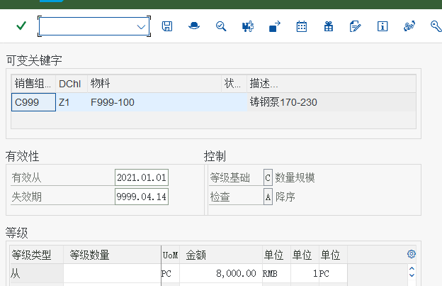
売上税率の登録
業務処理VK11VK11 で売上税の税率（条件タイプ MWST）を登録。
后勤 → 销售和分销 → 主数据 → 条件 → 按条件类型选择 → VK11 → 创建手順の要点（教材原文のステップごとの説明）
- 解説 売上税も受注伝票の価格設定の過程で計算されるもので、条件タイプは MWST です。これも 1 つの価格として登録するもので、異なるのは税コードを通じて間接的に税率を得る点です。
原文（中国語）
解释：销项税也是在销售订单定价过程中计算的，条件类型 MWST。着也是作为一种价格维护，所不同的是通过税码来间接得到税率的。
{kind=link}
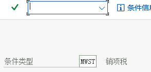

受注先マスタの販売ビューを登録
業務処理VD01得意先マスタの販売ビュー（VD01）：販売エリア、得意先計算スキーマ、輸送条件、税分類。
后勤 → 销售和分销 → 主数据 → 业务伙伴 → 客户 → 创建 → VD01手順の要点（教材原文のステップごとの説明）
- 解説 K001 受注先－颐宁勘定グループの得意先は財務データのみ登録されており、販売ビューは登録されていません。 業務処理 ロジスティクス－販売管理－マスタデータ－ビジネスパートナ－得意先－登録－VD01
原文（中国語）
解释：K001 订货方－颐宁账户组下的客户只创建了财务数据，没有建立销售视图前台
后勤－销售和分销－主数据－业务伙伴－客户－创建－VD01 - 勘定割当グループ、01 は国内収益です。得意先の勘定割当グループも売上収益の総勘定元帳勘定の自動決定に影響しますが、6.29 売上収益の総勘定元帳勘定の登録では颐宁公司が品目によって売上収益勘定を決定する分だけを登録しているため、得意先マスタのこの項目は作用しません。
原文（中国語）
账户分配组，01 为国内收入。客户的账户分配组也可以影响自动确定销售收入的总帐科目，但是我们在6.29 维护销售收入的总帐科目中只维护了颐宁公司根据物料确定销售收入科
目，所以客户主数据中这个参数不起作用


出荷先の販売ビューを登録
業務処理VD01出荷先（納入先）得意先の販売ビュー：納入がどこに届くか。
后勤 → 销售和分销 → 主数据 → 业务合作伙伴 → 客户 → 创建 VD01手順の要点（教材原文のステップごとの説明）
- ロジスティクス－販売管理－マスタデータ－取引パートナ－得意先－登録 VD01
原文（中国語）
后勤－销售和分销－主数据－业务合作伙伴－客户－创建 VD01 - 远东造船三厂は远东造船厂の受注伝票の出荷先であるだけなので、販売ページで登録するものは特にありません。「发送」をクリックして進みます
原文（中国語）
远东造船三厂只是远东造船厂的销售订单的送达方，所以销售页面没什么要维护的。点击发送，进入


出荷先の受注先への割当
業務処理VD02出荷先を受注先に割り当てます（VD02 → パートナ機能）：1つの受注先に複数の出荷先を設定できます。
后勤 → 销售和分销 → 主数据 → 业务合作伙伴 → 客户 → 更改 → VD02手順の要点（教材原文のステップごとの説明）
- 解説 颐宁公司の得意先である远东造船厂の受注伝票では、出荷先がその支店である远东造船厂第三分公司であることもあります。このような関係を処理するには、远东造船厂の得意先マスタで第三分公司を「出荷先」として登録する必要があります。 ロジスティクス－販売管理－マスタデータ－ビジネスパートナ－得意先－変更－VD02
原文（中国語）
解释：颐宁公司的客户远东造船厂的销售订单，收货方还有可能是它的分公司远东造船厂第三分公司。要处理这样的关系，我们在远东造船厂的客户主数据中必须将第三分公司作为“ 送达方”维护
后勤－销售和分销－主数据－业务合作伙伴－客户－更改－VD02 - 「販売エリアデータ」をクリック
原文（中国語）
点击销售区域数据


I. 販売プロセス（業務処理）
見積 → 受注 → 納入 → 請求 → リリース → 伝票フロー。
見積の登録
業務処理VA21見積 VA21：得意先に正式な価格を提示する。有効期間を含めることもできます。
后勤 → 销售和分销 → 销售 → 报价 → VA21-创建手順の要点（教材原文のステップごとの説明）
- 解説 远东造船厂に販売の意向があり、颐宁販売組織に铸钢泵 170-230 を 30 個提供するよう求めています。本ステップでは見積を作成します。 ロジスティクス－販売管理－販売－見積－VA21-登録
原文（中国語）
解释：远东造船厂有一个销售意向，要求颐宁销售组织提供 30 件铸钢泵 170-230，我们在本步骤来报价
后勤－销售和分销－销售－报价－VA21-创建

{kind=link}
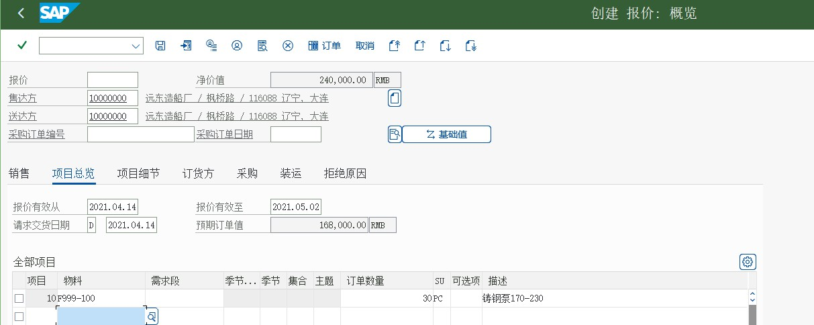
受注伝票の登録
業務処理受注伝票：見積を参照して登録（後続機能 → V-01 受注）、価格設定と所要量確認。
后勤 → 销售和分销 → 销售 → 报价 → 后继功能 → V-01-订单手順の要点（教材原文のステップごとの説明）
- ロジスティクス－販売管理－販売－見積－後続機能－V-01-受注
原文（中国語）
后勤－销售和分销－销售－报价－后继功能－V-01-订单 - 「参照して作成」をクリック
原文（中国語）
点击有参照创建 - システムが有効在庫なしと表示します。「続行」をクリック（MB1C 501 の伝票参照なし入庫で在庫を補充してから後続処理を行うことを推奨）
原文（中国語）
系统显示无可用库存，点击继续（建议通过MB1C 501无订单收货后再做后续的操作）


出荷伝票の登録
業務処理VL01N出荷伝票 VL01N：出荷ポイント、ピッキング保管場所、納入内容を決定します。
后勤 → 销售和分销 → 装运和运输 → 外向交货 → 创建 → 单个凭证 → VL01N手順の要点（教材原文のステップごとの説明）
- ロジスティクス－販売管理－出荷と輸送－出荷伝票－登録－個別伝票－VL01N
原文（中国語）
后勤－销售和分销－装运和运输－外向交货－创建－单个凭证－VL01N - ロジスティクス－販売管理－出荷と輸送－出荷伝票－変更－VL01N-個別伝票
原文（中国語）
后勤－销售和分销－装运和运输－外向交货－更改－VL01N-单个凭证


請求伝票の登録
業務処理VF01請求書 VF01：納入を参照して請求し、請求伝票を生成します。
后勤 → 销售和分销 → 出具发票 → 出具发票凭证 → VF01-创建手順の要点（教材原文のステップごとの説明）
- ロジスティクス－販売管理－請求－請求伝票－VF01-登録
原文（中国語）
后勤－销售和分销－出具发票－出具发票凭证－VF01-创建 - 「保存」をクリック
原文（中国語）
点击保存


請求書のリリース
業務処理VF02請求書のリリース VF02：財務会計へ転記し、会計伝票を生成します。
后勤 → 销售和分销 → 出具发票 → 出具发票凭证 → VF02-修改手順の要点（教材原文のステップごとの説明）
- 前のステップの販売請求伝票を財務会計の業務処理で転記 ロジスティクス－販売管理－請求－請求伝票－VF02-変更
原文（中国語）
将上步的销售发票凭证过账到财务会计前台
后勤－销售和分销－出具发票－出具发票凭证－VF02-修改 - 旗アイコンを押すと、画面下部に伝票が会計に転送された旨のメッセージが表示されます。「会計」をクリック
原文（中国語）
按小旗子，屏幕下方会提示凭证已经传送到记账，点击会计


「元伝票」をクリック
業務処理「元伝票」をクリック：伝票フローを検証する（請求書 → 納入 → 受注伝票）。

J. 分析とレポート
受注一覧、販売分析、総勘定元帳レポート、教材のつまずき集。
受注伝票の明細一覧を照会
業務処理VA05VA05 受注伝票明細一覧：日常的に受注を追う入口。
后勤 → 销售和分销 → 销售 → 信息系统 → 订单 → VA05-销售订单清单
販売分析
業務処理MCTAMCTA 販売分析：標準分析レポート（事前に更新グループを有効化し、統計グループを登録しておく必要があります）。
后勤 → 销售和分销 → 销售信息系统 → 标准分析 → MCTA-客户手順の要点（教材原文のステップごとの説明）
- このステップでは、30 と 31 で事前に有効化し、得意先と品目マスタに統計グループを登録しておかないと、これらの標準分析にデータが表示されません
原文（中国語）
本步骤需在 30 和 31 中事先激活，并在客户和物料主数据中维护统计组，这些标准分析才会有数据 - 「转换细分」をクリック
原文（中国語）
点击转换细分


貸借対照表を実行
カスタマイジング（設定）FS00MIROCK11NCK24VL01NOBYC総勘定元帳レポート（貸借対照表など）と教材のつまずき集：期末に収益と税を検証。環境問題の解決策を多数収録。
会计 → 财务会计 → 总分类帐 → 信息系统 → 总帐报表 → 资产负债表/损益表/现金流 → 一般的手順の要点（教材原文のステップごとの説明）
- 会計－財務会計－総勘定元帳－情報システム－総勘定元帳レポート－貸借対照表／損益計算書／キャッシュフロー－一般
原文（中国語）
会计－财务会计－总分类帐－信息系统－总帐报表－资产负债表/损益表/现金流－一般的 - パス：SPRO -> 財務会計（新）-> 財務会計共通設定（新）-> 売上税/取得税 -> 基本設定 -> 計算手順への国の割当
原文（中国語）
路径：SPRO -> 财务会计（新）-> 财务会计全局设置（新）-> 销售/购置税 -> 基本设置 -> 向计算程序分配国家 - 作業タイプを設定できない場合も、この方法で解決できます
原文（中国語）
作业类型无法设置，也可以通过该办法解决 - カスタマイジングエラー：現在の業務トランザクショングループではありません
原文（中国語）
客户化错误：非当前业务交易组 - もう 1 つは RK811XUP（すべてのクライアント用）で、現在は RK811UPD が前者の代わりです
原文（中国語）
其二RK811XUP（对所有的集团）目前用 RK811UPD 代替前者 - CLIENT COPY が不完全なことが原因です。SE38 を実行し、2 つのプログラムのいずれかを実行してください。1 つは RK811XST（現在のクライアントのみ）、
原文（中国語）
是CLIENT COPY 不完整造成的，
请运行se38一下，执行两个程序中的一个：其一RK811XST(仅在当前的集团）， - 「+」は売上税のみ許可を表します。「*」はすべての税タイプを許可します。 その後、通常どおり請求書の入金ができます。注意：MIRO を終了してから入り直してください！
原文（中国語）
“+”代表只允许销项税。 “*”代表允许所有的税类型。
然后就能正常入发票付款了。注意，退出MIRO 重新进入！ - CK11N で、以下のように価格を登録すれば問題ありません。
原文（中国語）
通过CK11N要，按照如下方式维护价格，即可。 - CK11N を終了し、その後 CK24 を再実行します
原文（中国語）
退出CK11N，然后重新执行CK24 - MB1C 501 で期首在庫を入力すると、VL01N 出荷伝票を作成できない問題を解決できます
原文（中国語）
MB1C 501 录入期初库存，可以解决无法创建VL01N外向交货单的问题
{kind=link}
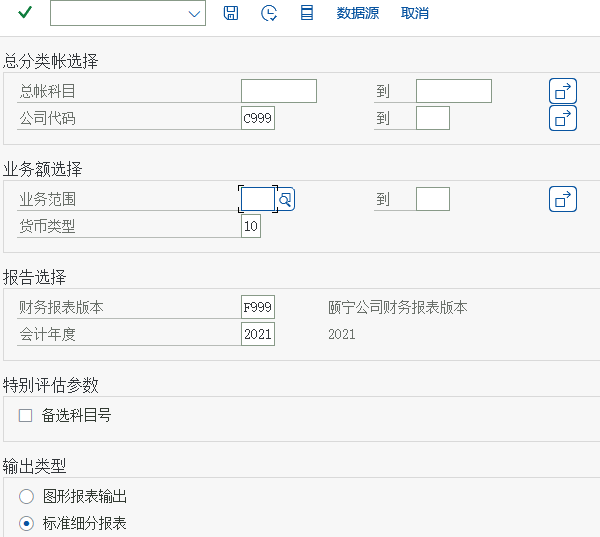

K. 設定の順序がなぜこの順序なのか
- 組織構造（A〜C）：データも伝票も組織キーを入力する必要があり、組織が存在しないと後は何も登録できません。
- 得意先勘定グループと価格設定（D〜F）：マスタの画面レイアウト、価格の計算方法、どの勘定に記帳するかは、いずれも「ルール」に属します。
- パートナ決定（G）：伝票上の役割がどこから来るのか。
- マスタ（H）：ルールを決めてから得意先と品目を登録します。マスタで入力するのは、まさにこれらのルール項目だからです。
- 伝票プロセス（I）：設定とマスタがそろって初めて、受注伝票から請求書まで一気に流れます。
- 分析（J）：最後に統計更新を有効にして、レポートにデータを出します。
L. セルフチェックリスト
- 得意先マスタ：少なくとも 1 つの販売エリアで販売ビューを登録できる（VD01/XD01）。
- 品目マスタ：販売ビューを登録でき、明細カテゴリグループ、税分類、勘定割当グループに値があることが確認できる。
- 条件レコード：
VK13で該当の販売エリア + 品目の PR00 価格を照会できます。 - 受注伝票：
VA01で登録後に価格が自動で表示され、納入日の確定に値が入る。 - 全チェーン：受注伝票 →
VL01N納入 → 出庫過転記 →VF01請求 →VF02リリース、さらにVF03で会計伝票を確認できます。